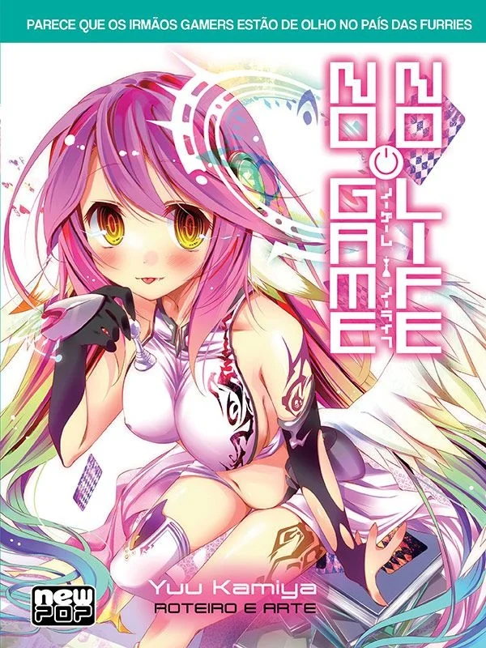

♠ Light Novel ♠
No Game No Life é uma série de light novel escrita e ilustrada por Yuu Kamiya. É publicada sob a impressão da MF Bunko J; dez volumes foram publicados pela Media Factory entre 25 de abril de 2012 e 24 de fevereiro de 2018. No Brasil, a série é licenciada e publicada pela editora NewPOP desde janeiro de 2015.
A Light Novel contem muitas informações extras do universo de NGNL, é altamente recomendavel tanto para aqueles que procuram saber mais sobre a série como para aqueles que temem receber spoilers. Para evitar tal problema a dica é que garanta já as suas cópias pelo site da editora NewPop.
Atualmente a série conta com 10 volumes, a data de lançamento do décimo primeiro volume ainda não foi divulgada, acreditamos que será lançado em breve. De todo modo, quando lançado será adicionado á tabela abaixo.
♠ Volumes ♠
| Volume | Titulo | Lançamento (Japão) | Lançamento (Brasil) |
|---|---|---|---|
| 1 | Parece que os Irmãos Gamers Querem Dominar o Novo Mundo ゲーマー兄妹がファンタジー世界を征服するそうです (Gēmā Kyōdai ga Fantajī Sekai o Seifuku suru sō Desu) | 25 de Abril de 2012 | Janeiro de 2015 |
| 2 | Parece que os Irmãos Gamers Estão de Olho no País das Furries ゲーマー兄妹が獣耳っ子の国に目をつけたようです (Gēmā Kyōdai ga Kemomimikko no Kuni ni Me o Tsuketa yō Desu) | 25 de Setembro de 2012 | Abril de 2015 |
| 3 | Parece que Um dos Irmãos Gamers Desapareceu... ゲーマー兄妹の片割れが消えたようですが・・・・・・? (Gēmā Kyōdai no Kataware ga Kieta yō Desu ga......?) | 25 de Janeiro de 2013 | Julho de 2015 |
| 4 | Os Irmãos Gamers Entram No Pior Jogo De Todos - O Amor! ゲーマー兄妹はリアル恋愛ゲームから逃げ出しました (Gēmā Kyōdai wa Riaru Ren'ai Gēmu kara Nigedashi Mashita) | 25 de Junho de 2013 | Setembro de 2015 |
| 5 | Parece que os Irmãos Gamers Não Gostam de Games Novos ゲーマー兄妹は強くてニューゲームがお嫌いなようです (Gēmā Kyōdai wa Tsuyoku Te Nyū Gēmu ga Okirai na yō Desu) | 25 de Novembro de 2013 | Janeiro de 2016 |
| 6 | Parece que o Casal de Gamers Desafiou o Mundo ゲーマー夫嫁は世界に挑んだそうです (Gēmā Fusai wa Sekai ni Idonda yō Desu) | 25 de Abril de 2014 | Março de 2016 |
| 7 | Parece que os Irmãos Gamers Vão Revolucionar o Mundo ゲーマー兄妹たちは定石を覆すそうです (Gēmā Kyōdai-tachi wa Jōseki o Kutsugaesu sō Desu) | 24 de Julho de 2015 | Novembro de 2016 |
| 8 | Parece que os Irmãos Gamers Vão Conseguir Executar Sua Estratégia ゲーマーたちは布石を継いでいくそうです (Gēmā-tachi wa Fuseki o Tsuide Iku sō Desu) | 25 de Dezembro de 2015 | Maio de 2017 |
| 9 | Parece que os Irmãos Gamers Vão Descansar por Um Turno ゲーマー兄妹は一ターン休むそうです (Gēmā Kyōdai wa Ichi Tān Yasumu sō Desu) | 25 de Agosto de 2016 | Dezembro de 2017 |
| 10 | Parece que os Irmãos Gamers Serão Pagos no Passado ゲーマー兄妹は過去(ツケ)を払わされるようです | 24 de Fevereiro de 2018 | Dezembro de 2019 |
A serie continua sendo escrita e um novo volume ja foi anunciado pelo autor no ano de 2021, quando o mesmo sera lançado ainda não se sabe pois o autor estava passando por procedimentos medicos que nã podia adiar. (Data deste paragrafo: 08/08/2022)